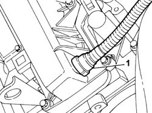
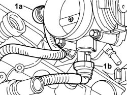
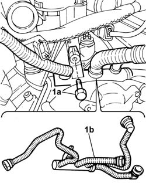

1080D15 SINGLE PIPE FROM LEFT AND RIGHT CYLINDER HEAD OIL VAPOUR SEPARATORS TO INLET - R.R.
- Path
- Procedures > 10 ENGINE > 1080 EXHAUST EMISSION CONTROL SYSTEM > 1080D CRANKCASE VAPOUR/GAS RECIRCULATION SYSTEM > 1080D15 SINGLE PIPE FROM LEFT AND RIGHT CYLINDER HEAD OIL VAPOUR SEPARATORS TO INLET - R.R.
- Kind
- repair procedure (removal / refitting; the operation number is the code)
- Applies to
- engines: 3.0 24V V6; all production periods
- Interactive page
- https://sloeber94.github.io/elrnDB-fUlss/en/#/179007110
Applies to: engines: 3.0 24V V6; all production periods
 Removing
Removing
 Refitting
Refitting
Applies to: engines: 3.0 24V V6; all production periods

Applies to: engines: 3.0 24V V6; all production periods
